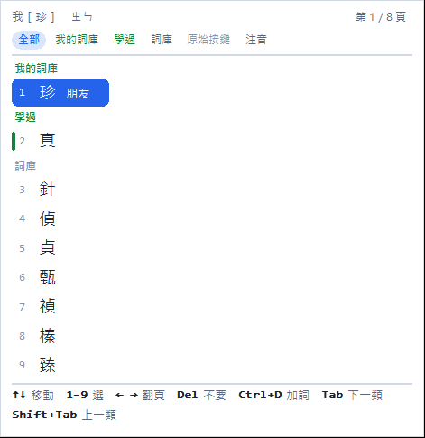
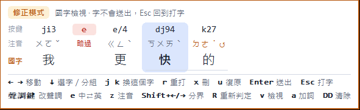

一般
每種打字方式一張卡片：開關決定它在不在 Shift 的輪流裡，「開啟時」選一開始用哪一種，點卡片看它的設定。
i am a good guy 維持英文；你想我i␣ 變成「你想我喔」。關閉後單一字母一律當英文。teh→the、wrold→world）；真的字、專有名詞、你自己的詞不動。改過的字標琥珀色 ↺，按 ↓ 選「原樣」改回來，之後不再改它。中文後面先打空白再打字母，會當成英文（第 i 項）。注音鍵盤和容錯在下面「注音」卡片設定。
藍色是聲調鍵。
k27→的）、聲調打早（248→大）、漏打聲調（clm/4→好用）、漏打一聲的空白（rupwu0→今天）。修過的地方標琥珀色 ↺。我e更快→我更快），提示列用紅色標出；按 ↓ 選紅色的「略過的鍵」放回來。保守：只略過很明顯的。連打三個以上同一個字母一律照打。連著打，不用打聲調（women → 我們）；要指定聲調時在音節後打 1–5（ma3 → 馬，5 是輕聲）。ü 打 v（lv → 綠），' 分開音節（xi'an），空白結束一個詞。
, . ; 在拼音裡是全形標點（，。；），不是字母。
打碼後按空白出字；連打幾個字時會用詞頻挑重碼字（hqi␣oan␣ → 我們）。還沒按空白時，提示框顯示字根和會出的字。字根對照：
碼表來自「倉頡五代補完計劃」（MIT 授權），重碼依台灣常用字排序。
所有按鍵（含 Ctrl+符號）直接交給程式。偶爾打一個英文詞不必切換：中英自動會判斷，大寫用 Caps Lock。
打字與選字
打字時游標旁邊的提示列、選字用的候選窗，以及什麼時候把字送出。
提示列
游標旁邊的一小列：還沒成字的注音、被略過的鍵、接續建議都顯示在這裡。
候選窗

綠色是你自己的詞（我的詞庫、學過）；Tab 只看某一組；紅色「略過的鍵」選了就把那個鍵留下來。
送出
組字中要「送出並換行」的 Enter，在「快捷鍵」設定。
實驗功能 實驗
還在試的功能，預設關閉。覺得不好用就關掉，不影響其他功能。
智慧修正
打快時的錯誤會自動修好；修不好的，用候選窗或修正模式手動改，改過的會記成詞。
自動修正的開關跟著打字方式走，在「一般」的卡片裡：「注音」有注音打錯容錯、略過多按的雜鍵；「中英自動」有單一字母判斷、英文打錯自動更正。
修正模式（類似 Vim） 即將推出
修正模式的解碼面板三列對齊：按鍵 → 注音 → 國字。常用的鍵寫在面板下方；只有 Esc／Enter／DD 會離開修正模式。

紅色刪除線＝被當成雜鍵略過的鍵；琥珀色 ↺＝順序打反、已照正確順序讀；藍色底線＝你自己選的字；綠點＝我的詞庫／學過。
| 按鍵 | 動作 |
|---|---|
| ← →（或 h l） | 移到上一格／下一格：一個中文字，或一整個英文字、數字 |
| ↓ | 選字窗：這個字、從這裡開始的詞、重新分組 |
| j k | 只換游標上的這個字（同音的下一個／上一個，不開視窗；旁邊的字不動） |
| v | 切換顯示：國字 → 注音 → 按鍵 |
| x | 刪掉游標上的那一格；在「按鍵」檢視時只刪一個鍵（例如那個多按的 e） |
| e | 這段在 中文 ⇄ 英文 ⇄ 原始按鍵 之間切換 |
| z | 游標上的國字換成注音（你 → ㄋㄧˇ），再按一次換回國字 |
| r | 重打這一個字（其他字不動，打完自動回到修正模式） |
| a | 把游標前的詞加入詞庫 |
| u | 復原上一步（和打字時的 Ctrl+Z 同一份紀錄；Ctrl+Y 重做） |
| Esc（或 i） | 回到打字（字都還在）；Enter 送出整段 |
| D D | 清除整段（要連按兩次，不會送出） |
學習
修正紀錄
你改過的字。同一個修正做到第 2 次，改成的詞會自動加進「我的詞庫」的「程式推薦」分類（標 ✓），排在同音詞前面；不要就到「我的詞庫」刪掉。
| 原本 | 改成 | 怎麼改的 | 次數 | 最近 |
|---|
只清掉這張表，不動已經學到的詞。
標點與符號
鍵盤上每個符號鍵，單按、Shift、Ctrl、Ctrl+Shift 各打出什麼，都在下面這張表。鍵盤上沒有的符號（希臘字母、數學、箭頭、emoji……）從符號面板選。
符號鍵的四種按法
| 鍵 | 單按 | Shift | Ctrl | Ctrl+Shift |
|---|
- Ctrl、Ctrl+Shift 兩欄可以直接改（每格一個字）；清空＝這個組合交給程式（例如 VS Code 的 Ctrl+\ 分割編輯器），↺ 恢復預設。只在中文模式有效，純英文模式的 Ctrl 組合鍵一律交給程式。
- 黃底＝同一個鍵有兩種按法打出一樣的字（可以改掉，多放一種符號）。
- 打錯寬度：游標停在標點後按 ↓，換全形、半形或相關符號（表中「↓ ，」）。，。？！：； 預設會立刻送出、不能再換；要換就到「打字與選字」關掉「句讀標點自動送出」。
符號面板 即將推出
更多符號
我的詞庫
自動收集的詞和你自己整理的詞分兩區。給自動收集的詞一個分類，它就進「我的詞庫」，打字時排最前面——例如把朋友的名字放進「朋友」。
新增詞
打字時也能加：Ctrl+D 把游標前的中文或英文字（候選窗開著時是選中的詞）加入詞庫。英文照你打的加進「常用英文」，以後不再被改（venv、wrold）。清單裡的詞按「編輯」可以改字或注音。
詞條
整理建議
可能用不到的詞，勾選後刪除。只看自動收集的詞，你加的、分了類的不會出現。
| 詞 | 讀音 | 為什麼 | 最近 |
|---|
分類
候選窗會在詞旁標上分類，例如「陳怡君 朋友」。刪除分類不會刪除裡面的詞。
片語與顏文字
常用的一段話（地址、簽名、罐頭回覆）存在這裡。打 ;; 叫出來，可以接著打關鍵字篩選；先預覽，按 Enter 才打出。顏文字和你收藏的符號也在這一頁。
新增片語
關鍵字用英文字母最快：打 ;;addr 只列出 addr 開頭的片語；沒有關鍵字就從清單選。分類只在這一頁整理用，不影響打字。
我的片語
| 關鍵字 | 片語 | 分類 | 用過 |
|---|
快速詞
打到觸發字，提示列最前面會用橘色建議這段文字，按 Tab 直接打出（取代觸發字）。可以自己寫，也可以直接連到一筆片語。
還沒有快速詞。例：觸發字 art → artifact。
顏文字
單按 右 Ctrl（或打 ::）打開符號面板，按 Tab 換到「顏文字」分頁：依心情分組，最近用過的排最前面。
我的符號
網路上收藏的顏文字、特殊符號，貼在這裡就能在打字時用：打開符號面板，在「我的符號」分頁選，最近用過的排最前面。
一行一個——有些顏文字本身就帶空白，用空白分隔會拆散它。重複貼上的會自動略過。
快捷鍵
會用到的鍵都在這一頁：上面是可以換、可以關的，下面是打字時所有按鍵的對照表。
可以調整的按鍵
std::vector 照常打）。全部按鍵
| 情境 | 按鍵 | 動作 | 狀態 |
|---|
語音輸入
按住 右 Ctrl 說話，放開就把文字打到游標位置，任何程式都可以用。全部在你的電腦上辨識，聲音不會上傳；只有按住時麥克風才會開啟。
語音輸入需要另外安裝辨識元件（不需要系統管理員權限）：下載約 110 MB、占用約 350 MB；有 NVIDIA 顯示卡時另外下載約 1.3 GB 的 CUDA 元件（占用約 1.8 GB），辨識快很多。
語音輸入
模型下載
| 模型 | 說明 | 大小 |
|---|
模型存在 %LOCALAPPDATA%\SmartIME\models，只需下載一次。
練習場
五分鐘，把順打會的事都玩一遍。每一步都是在框裡真的打字：對了就自動到下一步；想複習哪個功能，點章節就好。
全部走完了。之後想複習，系統匣圖示按右鍵 →「練習場…」就回得來。
練習時輸入法不會學習、不會動你的詞庫。一打就對的那一步（你的詞庫已經會了）直接送出也算過。
資料與隱私
你的設定和學到的詞都存在這台電腦，不會上傳。可以匯出帶到另一台電腦。
我的記憶
一萬個詞約 1–2 MB。只用過一次、超過 4 個月沒再用的學習紀錄會自動清掉；自己加的詞和封鎖的詞不會。「立即整理」還會清掉以前誤學、不是詞的兩字組（像「開新」）。
搬到另一台電腦
清除與重設
除錯紀錄 目前開啟
關於
順打輸入法 。免切換中英混打的注音輸入法。
這一版的新功能
更新紀錄
版本與更新
遇到問題
專案與授權
使用的資料與元件
| 元件 | 用途 | 授權 |
|---|---|---|
| 小麥注音詞庫（McBopomofo） | 中文詞與詞頻 | MIT |
| wordfreq | 英文詞頻 | 資料 CC BY-SA 4.0 |
| PIME | Windows 輸入法框架 | LGPL 2.1 |
| Python embeddable | 輸入法引擎執行環境 | PSF |
| 倉頡五代補完計劃 | 倉頡五代碼表 | MIT |